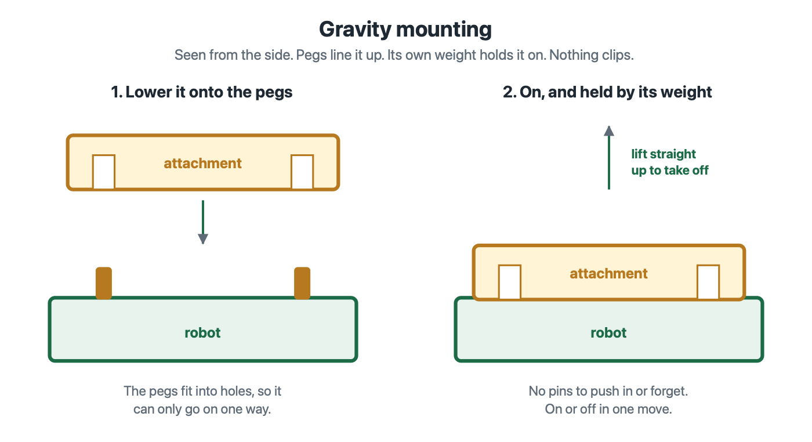

ROBOT
Attachments drop on, and gravity holds them


One move
Pegs line it up. Its own weight holds it.
Push before motors
A motor can go wrong. A push can't.
Arm starts on a stopper
The same fixed point every run.
FILL IN BEFORE JUDGING
How long a swap takes: time five swaps, use the middle one. Put it in FILL['swap'] in tools/make-judging-pack.py.
Robot, 1:10 to 2:15
- Six designs: blue wheels slip
- Flat: lines up on walls and mat lines
- 6 ports: 2 wheels, 2 attachments, 2 colour sensors
- Gravity mounting: one move (do the swap)
- Push before motors. Arm starts on the stopper
Show: Do a live attachment swap. Hold up an old attachment next to the new one.
Hand over: "Now the Code lead will explain our code."